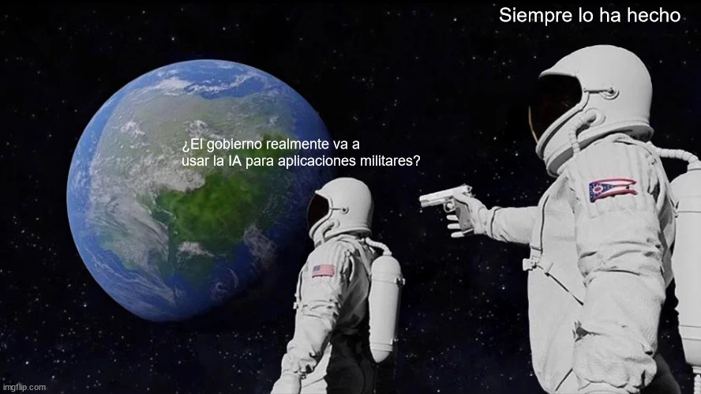

estrategIA #59 ·
La sorpresa del uso militar
El contexto
Publicado tras la victoria electoral de Trump en 2024, este diálogo utiliza la plantilla de los astronautas para cuestionar la supuesta novedad de la IA militar. La segunda figura responde a la sorpresa de la primera con una afirmación deliberadamente tajante.
Publicado en: estrategIA #59: La segunda era de Trump y la inteligencia artificial: ¿un camino sin restricciones hacia la AGI?
Leer el texto de la imagen
¿El gobierno realmente va a usar la IA para aplicaciones militares? Siempre lo ha hecho
Marca de la herramienta visible en el original: imgflip.com.